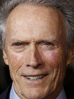
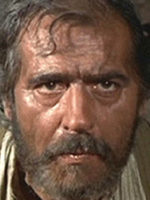
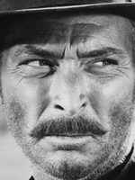

Clinton «Clint» Eastwood Jr. (San Francisco, California, 31 de mayo de 1930) es un actor, director, productor, músico y compositor estadounidense. Su primer papel relevante fue como secundario en el reparto de la serie de televisión Rawhide (1959-1965). Alcanzó la fama interpretando al Hombre sin nombre en los spaghetti western conocidos como Trilogía del dólar que dirigió Sergio Leone en la década de 1960 —Por un puñado de dólares, La muerte tenía un precio y El bueno, el feo y el malo— y a Harry Callahan en la serie de películas de Harry el Sucio durante los 70 y 80. Estos papeles, entre otros, lo convirtieron en un icono cultural de cierto tipo de masculinidad.
Por su trabajo en Unforgiven (Sin perdón, 1992) y en Million Dollar Baby (2004), Eastwood fue galardonado con los premios Óscar a mejor director y mejor película. Estas películas en particular y otras como Play Misty for Me (Escalofrío en la noche, 1971), Thunderbolt and Lightfoot (Un botín de 500.000 dólares, 1974), The Outlaw Josey Wales (El fuera de la ley, 1976), Escape from Alcatraz (Fuga de Alcatraz, 1979), Tightrope (En la cuerda floja, 1984), El jinete pálido (1985), Heartbreak Ridge (El sargento de hierro, 1986), En la línea de fuego (1993), Los puentes de Madison (1995) y Gran Torino (2008) fueron éxitos de crítica y público.3

Además de dirigir muchas de las películas que le han convertido en una estrella del cine, Eastwood ha dirigido otros filmes en los que él no actúa, como Mystic River (2003) y Cartas desde Iwo Jima (2006), por las que fue nominado a los Óscar, y Changeling (El intercambio, 2008). Eastwood ha sido especialmente aclamado por la crítica en Francia, también por películas que no fueron muy bien recibidas en su propio país, y por ello ha sido galardonado con los más altos honores del país europeo: en 1994 recibió la Orden de las Artes y las Letras de la República Francesa y en 2007 la Legión de Honor. En el año 2000 recibió el León de Oro a toda su carrera en el Festival Internacional de Cine de Venecia. Desde 1967 Eastwood posee su propia productora de cine, Malpaso Productions, que ha producido la mayor parte de sus películas. También fue alcalde de la localidad californiana de Carmel-by-the-Sea desde 1986 a 1988. Según afirmó su hija Alison en 2011, Eastwood tiene ocho hijos de seis mujeres diferentes,aunque solo se ha casado dos veces.
Clint Eastwood lleva en activo 53 años, a lo largo de los cuales ha participado en 52 películas que promedian una nota de 7.9/10.

Antonio Casas Barros (La Coruña, 11 de noviembre de 1911 - † Madrid, 14 de febrero de 1982) fue un actor y futbolista español.
En el cine se convirtió en un sólido actor de reparto a lo largo de las décadas de 1940 y 1950, con títulos como Fuenteovejuna, de Antonio Román; La leona de Castilla y Alba de América, de Juan de Orduña o El ruiseñor de las cumbres, de Antonio del Amo. Durante la década de 1960 participó en numerosos Spaguetti western, recordándose su trabajo en Una pistola para Ringo y El retorno de Ringo, de Duccio Tessari y sobre todo en El bueno, el feo y el malo, de Sergio Leone.
En 1963 consiguió el Premio del Sindicato Nacional del Espectáculo por su papel principal en Nunca pasa nada, de J. A. Bardem, donde encarnó a un médico de provincias en la disyuntiva de dejarse seducir por una alegre corista francesa o seguir agonizando en la rutina familiar. Su amplia filmografía incluye los títulos Fata Morgana, de Vicente Aranda; Nueve cartas a Berta, de Basilio Martín Patino; Tristana, de Luis Buñuel y Nadie oyó gritar, de Eloy de la Iglesia, entre otras.
Antes de fallecer, Antonio Casas trabajó en 3 películas que promedian una nota de 8.6/10.

Clarence LeRoy Van Cleef, Jr. (Somerville, 9 de enero de 1925 - Los Ángeles, 16 de diciembre de 1989), más conocido como Lee Van Cleef, fue un actor conocido principalmente por su participación en películas de acción y spaghetti western durante las décadas de 1960 y 1970.
Recordado principalmente por su participación junto a Clint Eastwood en Per qualche dollaro in più (La muerte tenía un precio, 1965) e Il buono, il brutto, il cattivo (El bueno, el feo y el malo, 1966), ambas del director Sergio Leone. Es considerado uno de los «villanos cinematográficos» más destacados.
Antes de fallecer, Lee Van Cleef trabajó en 3 películas que promedian una nota de 9.1/10.